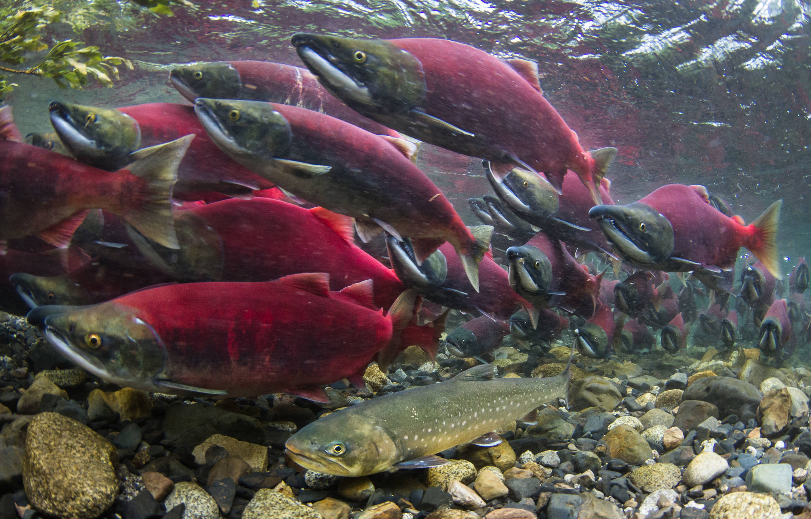

Events
Music in the Park
Free Concert Series Every Wednesday (June-Aug) – 6pm to 9pm in Soldotna Creek Park
Dip Netting
The dipnet season is currently July 10 through July 31 and requires a personal use fishery permit.
Wednesday Markets
Every Wednesday at the Soldotna Creek Park starting the first week of June through August.
History Of soldotna
The Kenai River
Soldotna is home to the legendary Kenai River, with so many creatures who partake in its bounty. every millions of Red salmon travel up the river from the ocean to spawn and lay eggs in the Skilak lake. ever heard of brother bear? remember when they go to that haven full of salmon? yes it really is like that, no exageration. Salmon upon Salmon go running up the river and you see them in the boats loads. it has even spurred a tradtions and season called dip netting, during this time usually set up around when the salmon begin to run all those who have a fishing license are able to take there little dip nets and take to the river to catch anywhere from three to six fish per day.
